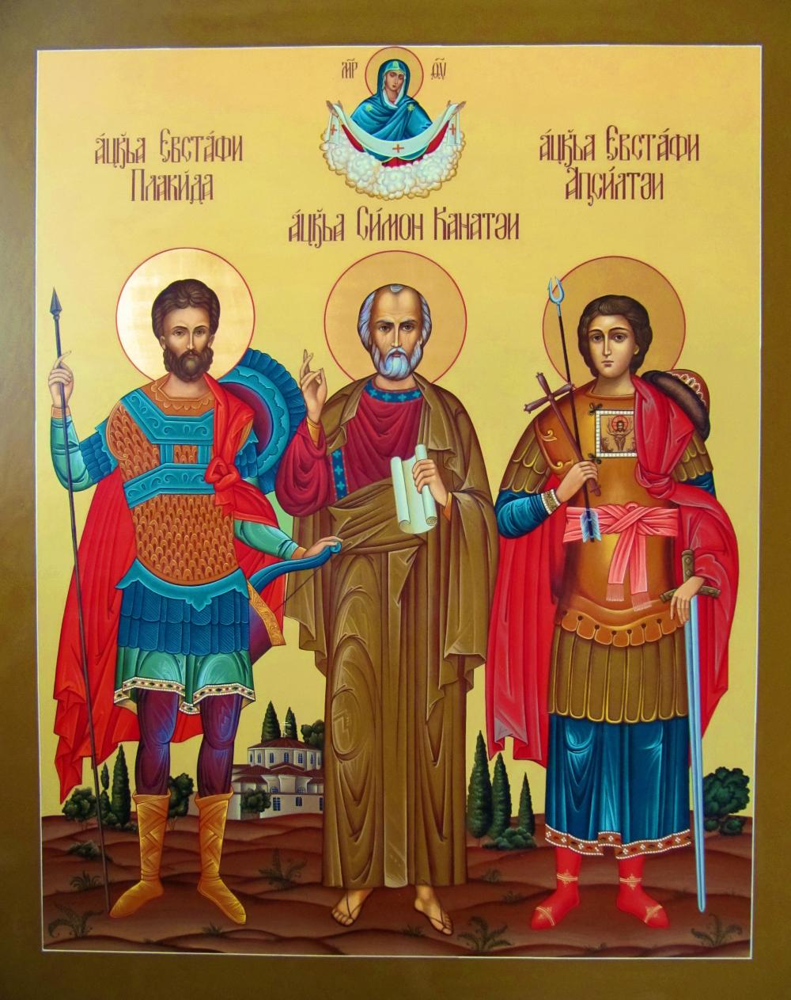

23 05 2012 (1816 дней 20 часов назад)
Просветитель Абхазии Святой Апостол
Симон Кананит
Симон Кананит

Память святого апостола Симона Кананита отмечается дважды в году: в день его преставления 10/23 мая (н. ст.) и в день празднования Собора 12-ти апостолов — 30 июня/13 июля (н. ст.).
Святой апостол Симон – один из двенадцати ближайших учеников Христа Спасителя – является сыном святого праведного Иосифа Обручника от первого брака (см.: Мф. 13, 54–55) и, соответственно, сводным братом Господа Иисуса. За особое усердие в исполнении заповедей Божиих святого Симона именуют Зилотом, что в переводе с греческого означает “ревнитель закона”. Апостол Симон КананитПрославлен он и под именем Кананита, что связано с церковным преданием. Согласно ему, описанный в Евангелии брак в Кане Галилейской, куда пригласили Христа и Пресвятую Деву Марию, был свадьбой будущего апостола Симона и его невесты, красавицы Саломии. Здесь Господь и сотворил Свое первое чудо – претворение воды в вино. В самый разгар свадебных торжеств в доме Симона закончилось вино, что могло бы навлечь бесчестие на весь дом и новобрачную чету. Чтобы этого не случилось, Христос по просьбе Своей Матери велел до верха наполнить шесть каменных сосудов водой и сотворил из нее прекрасный напиток. “Так положил Иисус начало чудесам в Кане Галилейской,— повествует Евангелие,— и явил славу Свою; и уверовали в Него ученики Его” (Ин. 2, 9–11). Это чудо изменило коренным образом всю дальнейшую жизнь самого Симона. Он познал, что Иисус, почтивший Своим присутствием его свадьбу, есть подлинный Мессия, Сын Божий, и оставив все последовал за Ним. Евангельское чтение во время совершения таинства венчания повествует именно об этом событии, что, по-видимому, и послужило причиной почитания апостола Симона Кананита как покровителя христианского супружества.
После Вознесения Господа Иисуса Христа, в день Пятидесятницы Симон получил дар Святого Духа, сошедшего на учеников Спасителя в виде огненных языков в Сионской горнице. Вместе с другими апостолами он вышел на проповедь Евангелия Христова. Симон проповедовал веру Христову сначала в Иудее, потом — в Эдессе (Сирии), Армении, Египте, Киринее (Ливии), Мавритании, Испании и даже Британии, о чем свидетельствуют местные предания некоторых христианских народов. Известно, что апостол Симон вместе с апостолами Андреем Первозванным и Матфием благовествовал в земле Иверской. Далее он и апостол Андрей пошли в горы Сванетии, затем — в Осетию и Абхазию, где и остановились в городе Севасте, нынешнем Сухуми. Святой Андрей отправился проповедовать вдоль Черноморского побережья Кавказа, а апостол Симон поселился в пещере, расположенной в ущелье реки Псыртсхи (в окрестностях современного г. Новый Афон). Это было примерно в 55 году н. э.
В Абхазии святой Симон творил множество знамений и чудес, а силой своей проповеди многих людей обратил ко Христу. Из-за этого он неоднократно подвергался нападкам со стороны язычников. Вскоре, как и большинство апостолов, Симон принял мученическую кончину.
Ученики погребли тело святого недалеко от его пещеры. На могилу стали приходить верующие, прося помощи и исцеления от болезней. По преданию, еще в I веке рядом с пещерой апостола Симона забил целебный источник, который существует до сих пор. В IV веке над местом погребения апостола воздвигли храм в его честь. В XIX веке рядом с древним храмом афонские монахи основали Ново-Афонский Симоно-Кананитский монастырь, который стал центром православного просвещения Кавказа и всего юга России.
Кондак 1
Избр'анный ап'остоле Христов и благов'естниче, мр'ежею проповеди твое'я улов'ивый во спасение многия души человеческия и ко Христу привед'ый идолослужением помрач'енныя люди, С'имоне блаженне, в п'еснех восхвал'яем тя с любовию и молим ти ся прилежно: 'яко им'еяй дерзновение ко Господу, молися Ему в'ыну за ны грешныя и молитвами твоими от всяких нас бед свобожд'ай, да зов'ем ти: Радуйся, Симоне, апостоле Христов и молитвенниче о душ'ах наших.